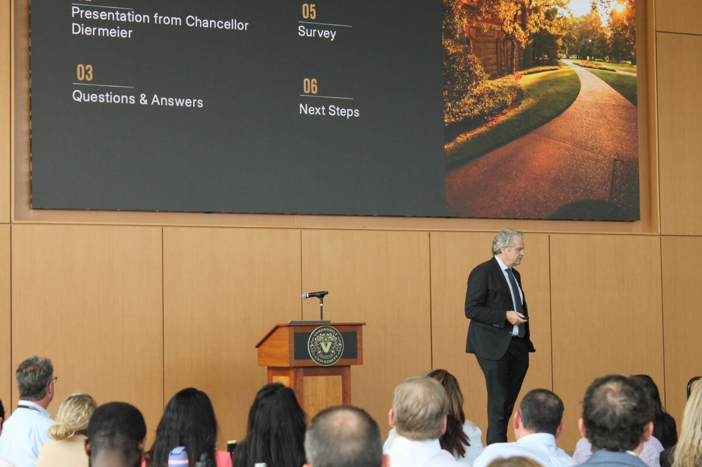

Turn the vision into work.
The Chancellor’s Symposium talk in three modules, then your moves for the week.
What you will be able to do
- Explain Vanderbilt’s vision and industry vision, and read the numbers behind them.
- Trace how reputation enables the mission, and name the three reputation flywheels.
- Read what shapes reputation and the trust radar, place a story on the reputation terrain, and spot the optimal time to act.
- Explain the three areas of focus and the four problems they answer.
- Weigh a decision on mission and margin, and name the leadership mindset and key levers.
Three modules, then your week.
The Chancellor’s Symposium talk, in the order he gave it. Self-paced, narrated, about 45 minutes.
- See one idea per page, from his slides.
- Do something with it: predict, sort, match, or build.
- Apply it to your team and your pod’s work.
- Oct 29Symposium
- Nov 2Course One
- Nov 6Teams post due
- Nov 9Course Two
- Nov 20Capstone due
Tap each stop to preview it
Three modules, then this week. Tap a stop to see what is there.
Vision, strategy, and the future of Vanderbilt.
Why it matters to you. Your team’s daily work is where the vision becomes real. Knowing the vision, and the numbers behind it, helps you aim that work.
You will be able to- Explain the Vanderbilt Vision and the Industry Vision.
- Read the numbers behind them, since 2020.
- Trace how reputation enables the mission.

Two visions, one direction.
The Chancellor opened with two slides. One is a vision for Vanderbilt. The other is for every leading research university.
- Vanderbilt Vision: what Vanderbilt will become.
- Industry Vision: the role Vanderbilt will help research universities reclaim.
Open each numbered phrase to see what it asks
Put the vision to the test.
The Chancellor answered with numbers from 2020 to today. Guess three of them first: a guess, even a wrong one, makes the real number stick.
- Students: undergraduate selectivity.
- Support: net new commitments.
- Athletics: football wins.
Slide to your guess, lock it in, then see the chart
Six more of his charts.
The students who choose Vanderbilt, research, financial strength, and two basketball seasons: each chart compares the early 2020s with today.
(1) The 2020-21 men’s basketball season was shortened by the COVID-19 pandemic. The team’s final record was 9-16 that year.
Vanderbilt has grown beyond Nashville.
Two of the Chancellor’s slides on one frame: the Vanderbilt University footprint in 2020, and in 2026. Each new site has a reason.
Drag from 2020 to 2026, then tap each new site
Go deeper: why grow beyond Nashville
New sites extend Vanderbilt’s reach to new learners, partners, and places, and every one of them runs on the systems and people built in Nashville. Map from the Chancellor’s University Strategy presentation (Growth Initiatives Updates). Site details from Vanderbilt: New York City, West Palm Beach, San Francisco, Quantum Innovation.


Tap a site on the map, or a name on the left, to open its card.
Three flywheels turn reputation.
On the Chancellor’s slide, three curved arrows circle Vanderbilt’s reputation. Each one is a flywheel: once it turns, it keeps building momentum.
Turn each card to see what the flywheel means
Name the flywheel.
Every unit on campus feeds these flywheels. When you can name the one a moment turns, you can tell your team’s work in a way that builds Vanderbilt’s reputation.
All six moments are hypothetical.
Drag each moment to the flywheel it turns, or tap the flywheel
How reputation enables the mission.
The last slide of Module 1 is a loop. Reputation attracts resources. Resources build reputation. Then it turns again.
Open each numbered part of the Chancellor’s slide
Reputation attracts resources.
The slide names four resources: talent, funding, partnerships, and access and influence. Match each hypothetical moment to the resource it brings Vanderbilt.
Tap a moment, then the resource it brings
Module 1 in three ideas.
- Two visions. Vanderbilt will define, and be, the great university of the 21st century, and help reclaim the essential role of leading research universities in driving American prosperity.
- The numbers since 2020. Selectivity, yield, commitments, research funding, the endowment, net assets, and wins, plus a footprint well beyond Nashville.
- Reputation enables the mission. Three flywheels turn it. Reputation attracts resources, and resources build reputation.
Your team’s daily work is where the vision becomes real. Every result you deliver feeds Vanderbilt’s reputation, and reputation brings back talent, funding, partnerships, and access and influence.
Do this weekAt your next team meeting, share one number from this module and ask: which part of the vision does our work serve?
You are a guardian of a legacy.
Why it matters to you. In the Chancellor’s words, every decision and interaction can enhance our credibility. Your team’s choices build Vanderbilt’s reputation, or spend it.
You will be able to- Read what shapes reputation, and the trust radar.
- Place a story on the reputation terrain, and see how stories migrate.
- Spot the optimal time to act.
Go deeper
The book. The Chancellor’s Reputation Rules (McGraw-Hill, 2011) develops the trust radar in depth, through real corporate crises. For a manager’s view of reputation risk, see Eccles, Newquist, and Schatz, Reputation and Its Risks, Harvard Business Review, February 2007.
Reputation is made in public.
The Chancellor’s first slide on reputation maps who reaches the people Vanderbilt serves. The university is one voice among many.
Ask yourself: when people outside Vanderbilt hear about your area, who tells them?
Open each numbered part of the slide
Trust has four drivers.
The trust radar names them: empathy, transparency, expertise, and commitment. On the slide, the shape reaches the outer ring on all four sides. A strong response does too.
What each driver sounds like is a hypothetical example.
Turn each card to hear what the driver sounds like
Draw your team’s radar.
Rate your team on each driver, as the people you serve would see it today. A short side is where trust is thin, and the place to invest before you need it.
Just for you. Not scored, and it stays in this browser.
Rate your team on each driver of trust
Where a story sits shapes its coverage.
On the reputation terrain, societal importance runs up and audience interest runs across. Each corner gets its own kind of coverage, from wire services to 60 Minutes.
All four stories are hypothetical.
Drag each story to its corner of the terrain, or tap the corner
Stories migrate.
The Chancellor’s first example starts as typical sports coverage. One post moves it straight up the terrain, and it becomes a different story.
Watch what changes, and what stays the same.
Move the slider, or tap Next, to watch the story move
A second circle surrounds the media.
The Chancellor’s slide adds a ring to the first map. The university speaks to its constituents, the media surrounds them, and activists surround both.
Ask yourself: who in the second circle cares about your area?
Turn each card to light up its part of the slide
A story can move two ways.
The Chancellor’s second example moves across the terrain first, then up. Two forces, one after the other, turned clinical care guidelines into a different story.
Open each numbered step of the story
Act before it feels urgent.
The slide plots intensity over time. Control starts high and falls away. The stakes start low and rise. The optimal time to act comes well before the typical time.
Drag the marker along the time line to find the right time to act
Early or late?
One hypothetical issue, unfolding over a week. Your choices decide when you act, and what it costs. Then try another path.
- Watch control and the stakes.
- Check your reply against the four drivers of trust.
Make two decisions, then read the debrief
Module 2 in three ideas.
- Reputation is made in public. The university speaks to its audiences. The media surrounds them, and activists form a second circle.
- Trust has four drivers. Empathy, transparency, expertise, and commitment. A strong response reaches all four.
- Stories migrate, so act early. A story can move across the reputation terrain. The optimal time to act comes while control is high and the stakes are low.
Reputation is made in public and built on trust: transparency, expertise, empathy, and commitment. The best time to act is early, while you still have control.
Do this weekName one small issue in your area, fix it, and tell the people affected, before it grows.
Fluent in mission and margin.
Why it matters to you. In the Chancellor’s words, mission without margin is unsustainable, and margin without mission is meaningless. Leaders must be fluent in both.
You will be able to- Explain the three areas of focus and the four problems they answer.
- Weigh a decision on mission and margin, and name the leadership mindset and key levers.
- Name the leadership mindset and key levers your team will use.
Go deeper
The book. Chancellor Daniel Diermeier and Brett C. Sweet wrote Mission and Margin: A Practical Guide to University Finances (University of Chicago Press, 2025), an insider’s guide for non-insiders. Its chapters go further than this course: following the cash, buildings and depreciation, space, the economics of research, scholarships and fundraising, and debt. The Chancellor also discusses Vanderbilt’s approach on Freakonomics Radio, episode 679.
Uncommon speed, agility and scale.
How will Vanderbilt achieve the vision? The Chancellor answered in one sentence. Each gold phrase in it does a different job.
Open each numbered phrase to see the job it does
Three areas of focus.
Three areas of focus carry the vision. Each does a different job: Exceptional Core Operations is the fuel, Bold Strategic Initiatives extend the reach, and Values Driven Leadership changes the industry.
Same name, two ideas. Values Driven Leadership, the area of focus, is work Vanderbilt takes on. The Values-Driven Leadership flywheel in Module 1 is one way reputation grows.
Drag each initiative to its area of focus, or tap the area
Four problems to solve.
The areas of focus answer four problems, named on the Chancellor’s slide. Each has a small, everyday version that may already be on your desk.
The everyday versions are hypothetical.
Open each gold phrase to see the problem up close
Universities face pressure.
Rising costs, declining support, higher expectations. Leaders must connect values and viability. The Chancellor showed what the pressure looks like at peer universities.
- The Harvard Crimson
Hiring freeze continued (faculty + staff)
- Columbia Daily Spectator
Columbia to lay off nearly 180 researchers funded by federal grants
- The Brown Daily Herald
Brown extends staff hiring freeze, announces plans for more drastic cost-cutting measures
- The Daily Northwestern
Northwestern to eliminate more than 400 staff positions amid ‘mounting financial pressures’
- The Cornell Daily Sun
Staff Cuts, Hiring Restrictions Anticipated as University Faces ‘Profound Financial Challenges’
- Higher Ed Dive
Penn undergoes another round of budget-tightening measuresSenior directed leaders of its schools and centers to reduce “certain expenditures” by 4% amid federal policy headwinds like higher endowment taxes
- Bloomberg
Princeton Plans New Budget Cuts as Pressure From Trump Builds
- Forbes
Federal Cuts Force Hiring and Raise Pauses At Johns Hopkins University
Peer responses vary.
The Chancellor’s slide tracks 24 peer universities on six responses to financial pressure. Guess three of the counts, then see Vanderbilt’s column.
See the slide and the full table
Open the Chancellor’s slide, Peer responses vary, full size (opens in a new tab). Red: hiring freeze, layoffs or expense reductions communicated or confirmed. Beige: under review. Gray: none reported.
| Measure | Universities targeted by POTUS | ||||||||||||||||||||||||
|---|---|---|---|---|---|---|---|---|---|---|---|---|---|---|---|---|---|---|---|---|---|---|---|---|---|
| Harvard | Columbia | Brown | Northwestern | Cornell | Penn | Princeton | Johns Hopkins | Duke | Emory | USC | Notre Dame | Yale | NYU | Stanford | MIT | Peer university A | WashU | Rice | UChicago | Dartmouth | Peer university B | Boston College | Caltech | Vanderbilt | |
| NIH Funding (’24)$ million | $404 | $691 | $139 | $470 | $103 | $692 | $58 | $858 | $580 | $488 | $356 | $28 | $646 | $567 | $613 | $112 | $58 | $732 | $25 | $269 | $91 | $37 | $19 | $62 | $127 |
| Endowment$ billion | $53 | $15 | $7 | $11 | $10 | $22 | $33 | $13 | $12 | $8 | $8 | $18 | $41 | $7 | $38 | $25 | $4 | $12 | $8 | $10 | $8 | $3 | $4 | $4 | $10 |
| What was announced | 25% of SEAS staff laid off October 2025 | 180 staff | 100 layoffs Sep 2025 | 425 staff positions eliminated | Layoffs announced June 2025 | Layoffs announced Dec 2025 | 2,000 layoffs Mar 2025 | 599 staff buyouts; layoffs August 2025 | 1,000 layoffs November 2025 | Layoff potential announced December 2025 | 360+ layoffs announced August 2025 | 316 layoffs + eliminated ~200 vacant positions | Voluntary separation announced | Reorganization announced, layoffs | 75 layoffs Oct 2025 | 240 layoffs July 2025 | |||||||||
| Layoffs | Communicated or confirmed (staff) | Communicated or confirmed | Communicated or confirmed | Communicated or confirmed | Communicated or confirmed | Communicated or confirmed | Under review | Communicated or confirmed | Communicated or confirmed (faculty and staff) | None reported | Communicated or confirmed | None reported | Under review | None reported | Communicated or confirmed | None reported | None reported | Communicated or confirmed | Under review | Under review | None reported | Communicated or confirmed (staff) | Communicated or confirmed (staff) | None reported | None reported |
| Hiring Freeze | Communicated or confirmed (faculty and staff) | Communicated or confirmed (faculty and staff) | Communicated or confirmed (faculty and staff) | Communicated or confirmed (faculty and staff) | Communicated or confirmed (faculty and staff) | Communicated or confirmed (faculty and staff) | Communicated or confirmed (faculty and staff) | Communicated or confirmed (staff) | Communicated or confirmed (faculty and staff) | Communicated or confirmed (faculty and staff) | Communicated or confirmed (faculty and staff) | Communicated or confirmed (staff) | Under review (faculty and staff) | Communicated or confirmed (faculty and staff) | Communicated or confirmed (staff) | Communicated or confirmed (staff) | Under review | Communicated or confirmed (staff) | None reported | Communicated or confirmed | Communicated or confirmed (staff) | Communicated or confirmed (faculty and staff) | Under review (faculty and staff) | None reported | None reported |
| Salary Freeze | Communicated or confirmed | Communicated or confirmed | None reported | Communicated or confirmed | None reported | Communicated or confirmed | Under review | Communicated or confirmed | Communicated or confirmed | Communicated or confirmed | Communicated or confirmed | None reported | Merit reductionUnder review. Merit reduction | Under review | None reported | None reported | None reported | Communicated or confirmed | None reported | None reported | None reported | Communicated or confirmed | None reported | None reported | None reported |
| Budget Reductions | Communicated or confirmed | Communicated or confirmed | 2.5% cutCommunicated or confirmed. 2.5% cut | Non-personnel 10% cutCommunicated or confirmed. Non-personnel 10% cut | None reported | Non-personnel 5% cut + 4% (Feb 26)Communicated or confirmed. Non-personnel 5% cut + 4% (Feb 26) | 5%-10%Communicated or confirmed. 5%-10% | Communicated or confirmed | Under review | Communicated or confirmed | Schools: 5% cut; support units: 10% cutCommunicated or confirmed. Schools: 5% cut; support units: 10% cut | 2.5% cutCommunicated or confirmed. 2.5% cut | 5% cutCommunicated or confirmed. 5% cut | 3% cutCommunicated or confirmed. 3% cut | Budget cuts of $140MCommunicated or confirmed. Budget cuts of $140M | 5%-10% cutsCommunicated or confirmed. 5%-10% cuts | Communicated or confirmed | None reported | None reported | Reduce $100M in spendingCommunicated or confirmed. Reduce $100M in spending | Potential 5% cutCommunicated or confirmed. Potential 5% cut | Budget cuts of $33MCommunicated or confirmed. Budget cuts of $33M | Budget cuts of $30MCommunicated or confirmed. Budget cuts of $30M | None reported | None reported |
| CapEx Freeze | Under review | Communicated or confirmed | None reported | None reported | None reported | Communicated or confirmed | Under review | Under review | Communicated or confirmed | None reported | Under review | No new campus buildingsCommunicated or confirmed. No new campus buildings | Communicated or confirmed | None reported | None reported | 50% cutUnder review. 50% cut | None reported | Communicated or confirmed | None reported | Communicated or confirmed | None reported | None reported | None reported | None reported | None reported |
| Graduate Program Impacts | Communicated or confirmed | Communicated or confirmed | Communicated or confirmed | None reported | None reported | 20%Communicated or confirmed. 20% | None reported | None reported | Communicated or confirmed | None reported | None reported | None reported | None reported | Communicated or confirmed | None reported | Communicated or confirmed | None reported | Communicated or confirmed | None reported | Communicated or confirmed | None reported | None reported | None reported | None reported | None reported |
- Hiring “frost” / staff, layoffs expected, and/or expense reductions under review
- Hiring “freeze”, layoffs and/or expense reductions communicated/confirmed
- None reported
- S staff · F&S faculty and staff
Slide to your guess, lock it in, then see the chart
Mission is purpose. Margin is capacity.
On the Chancellor’s slide, two arrows join mission and margin in one cycle. Every unit does both kinds of work. Sort five hypothetical moments to see which is which.
Drag each moment to mission or margin, or tap one
Capacity is everybody’s job.
Two lines on the Chancellor’s slide: financial discipline enables strategic investments, and building financial capacity is everybody’s job. Try them on one hypothetical decision.
Make two decisions, then read the debrief
The leadership mindset.
Four lines on the slide: steward purpose and performance; use mission to guide priorities; build trust through transparency and consistency; think long-term and manage trade-offs.
All four moves are hypothetical.
Tap a move, then the mindset it shows
Four levers your team can pull.
The key levers: understand where money comes from and where it goes; use data and discipline to inform choices; collaborate in an academic and finance partnership; and pilot, learn, scale.
Just for you. Not scored, and it stays in this browser.
Rate your team on each lever
Module 3 in three ideas.
- Uncommon speed, agility and scale. Three areas of focus carry the vision: Exceptional Core Operations, Bold Strategic Initiatives, and Values Driven Leadership, aimed at four problems to solve.
- Mission is purpose; margin is capacity. Research, teaching, discovery, and the financial strength to pursue them. Leaders must connect values and viability.
- Building financial capacity is everybody’s job. Financial discipline enables strategic investments. Understand where money comes from and where it goes, then pilot, learn, scale.
Mission and margin go together. Building financial capacity is everybody’s job, and financial discipline is what makes strategic investment possible.
Do this weekBefore your next spending decision, ask your team: what does this do for the mission, and what does it do for the margin?
Eight situations.
Apply the Chancellor’s ideas to situations you have not seen: one from Module 1, four from Module 2, and three from Module 3.
- Choose, then read why.
- Six of eight completes the check. Retake it anytime.
Answer all eight. Six of eight to pass
0 of 8 answered.
How does Vanderbilt’s vision for the future resonate with you personally? In what ways can you align your leadership approach or daily work to help bring that vision to life?
Read the full prompt
Vanderbilt’s ambition is to be the great university of the 21st century by defining and executing a bold, future-focused vision that inspires innovation and impact. Leaders play a key role in connecting their daily work to this broader strategy: stewarding both mission and margin, so the university has the capacity to act on its vision, and protecting the trust and reputation that bring Vanderbilt the talent, funding, and partnerships it needs.
- Open your cohort’s Teams channel.
Open the Teams channel (opens in a new tab) - Post your response under Discussions. Start a new post and answer the question above in a short paragraph. The starter below can help.
- Reply to one colleague by Friday, November 6. Reply to at least one colleague’s reflection by highlighting a connection or perspective that strengthens their idea.
Go deeper.
Optional reading and listening for each module, from the Chancellor’s own books and the research behind them.
These go beyond the Symposium. The course itself teaches only what the Chancellor presented.
- Eliminate Strategic Overload (opens in a new tab)Felix Oberholzer-Gee, Harvard Business Review, 2021The value stick: a fast test for which work is truly strategic.
- Better, Simpler Strategy (opens in a new tab)Felix Oberholzer-Gee, Harvard Business Review Press, 2021The full book behind the value stick.
- Reputation Rules (opens in a new tab)Daniel Diermeier, McGraw-Hill, 2011The Chancellor’s book: the trust radar and more, through real corporate crises.
- Reputation and Its Risks (opens in a new tab)Eccles, Newquist, and Schatz, Harvard Business Review, 2007Why reputation risk deserves the same discipline as financial risk.
- Mission and Margin: A Practical Guide to University Finances (opens in a new tab)Daniel Diermeier and Brett C. Sweet, University of Chicago Press, 2025The Chancellor’s insider guide to how a university pays for its mission, in the language finance partners use.
- Why Does Vanderbilt Keep Winning? (opens in a new tab)Freakonomics RadioThe Chancellor on the strategy behind Vanderbilt’s momentum.
Course One complete
Take it to your pod.
Next: work on sections 1 to 3 of your pod’s brief on the capstone page. Course Two opens the week of November 9.
“Vanderbilt will define, and be, the great university of the 21st century.”
The Vanderbilt Vision